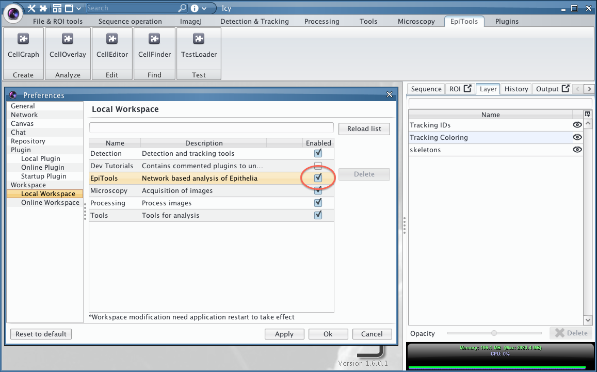
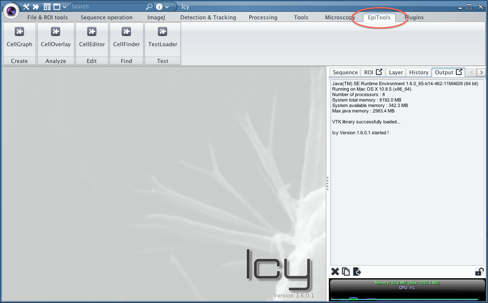

Installation of the EpiTools plugins for ICY
Welcome to the EpiTool plugins for ICY. This collection of plugins for the bioimaging platform icy allows to transform skeleton images into interactive overlays to explore and analyze your data.
Warning: if your icy background appears black instead of grey, the plugins will be affected an unsolved memory leak. Most reported cases appear in co-occurrence with Apple Retina® screens.
Temporary Fix: Use an external monitor with the macbook lid closed
Download & Move the files in the right place
- Download the package cellGraph_beta.zip from here
- Extract the package
- Place the plugin folder davhelle into the icy plugin folder (e.g. programs/icy/plugins)
- Place the workspace file EpiTools.xml into the icy workspace folder (e.g. programs/icy/workspace)
- The folder test does not require any particular location
To update just replace the cellGraph_v#.#.#.jar in the plugin folder davhelle
Release information about latest cellgraph versions: CHANGELOG.TXT
Enable the EpiTools Workspace in Icy
In order to add the EpiTools toolbar to your icy installation
- Enter the preferences (icy logo > preferences)
- Go to local workspace menu
- Enable the EpiTools workspace by checking the tickbox (see image below)
- Confirm by clicking Ok, you will be asked to restart icy to apply the changes.

After the restart should see the following screen when opening icy and selecting the Epitools Bar.

Install the required plugins for icy
In order to run the EpiTools plugins, only one additional icy plugin is required, EzPlug. This is a plugin which facilitates the building of graphical user interfaces and is used by all EpiTools Plugins. To install it simply write in the icy search field the following plugin name [network connection required]:
- EzPlug SDK (most likely already installed)
- 3D Mesh ROI (only for the CellSurface plugin)

Test if the installation was successfull
To test the installation:
- Run the TestLoader Plugin in the EpiTools Bar/or through the search bar
- You will be asked to locate the folder test from the download package
- Shortely after a new viewer should be visualized (image below)
Learn about what can be done with it in the next section

Installation video tutorial
For a complete installation of icy and CellGraph please watch our video tutorial